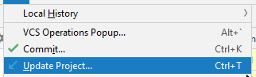

Git Stash vs Shelve in IntelliJ IDEA
I am very unfamiliar with the shelve aspect of Git (EDIT: not an aspect of
Git, but rather IntelliJ IDEA feature of shelve).
If stash is used to put aside unfinished work what is shelve then? What
would you use it for?
For example on Update Project (from VCS menu)

one will get (in IntelliJ IDEA 2019.2)

Answer
git shelve doesn't exist in Git.
Only git stash:
- when you want to record the current state of the working directory and the index, but want to go back to a clean working directory.
- which saves your local modifications away and reverts the working directory to match the HEAD commit.
You had a 2008 old project git shelve to isolate modifications in a branch, but that wouldn't be very useful nowadays.
As documented in Intellij IDEA shelve dialog, the feature "shelving and unshelving" is not linked to a VCS (Version Control System tool) but to the IDE itself, to temporarily storing pending changes you have not committed yet in changelist.
Note that since Git 2.13 (Q2 2017), you now can stash individual files too.
Suggest
When using JetBrains IDE's with Git, "stashing and unstashing actions are supported in addition to shelving and unshelving. These features have much in common; the major difference is in the way patches are generated and applied. Shelve can operate with either individual files or bunch of files, while Stash can only operate with a whole bunch of changed files at once. Here are some more details on the differences between them."